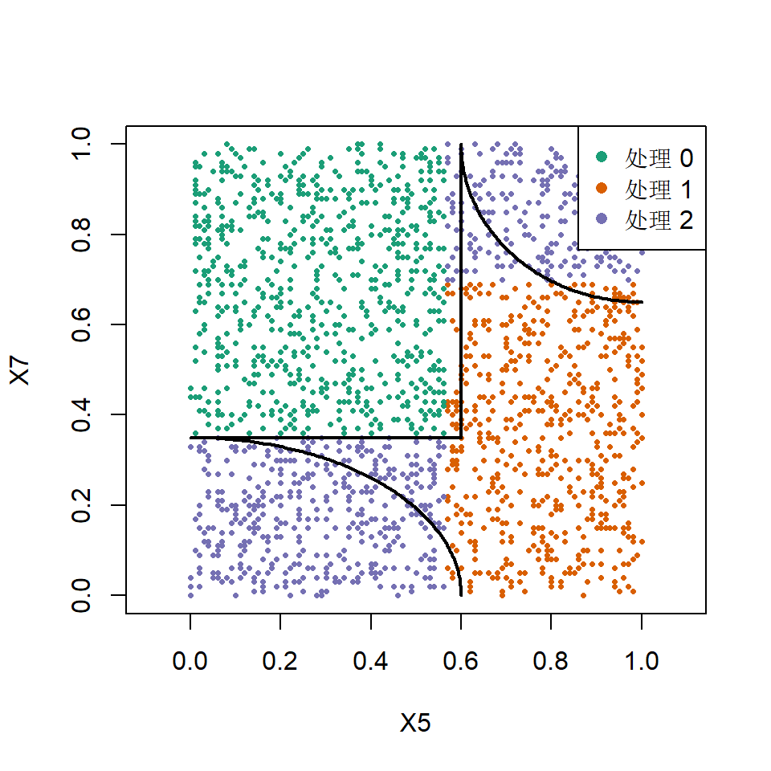

m <- gen_data_mapl(6000)
Xm <- round(m$X, 2)
colnames(Xm) <- paste0("X", 1:ncol(Xm))
mcf <- multi_arm_causal_forest(Xm, m$Y, as.factor(m$action), num.trees = 1000, seed = 1)
Gm <- double_robust_scores(mcf)
head(Gm, 3)
#> 0 1 2
#> [1,] 19.181695 1.828823 1.476665
#> [2,] 2.887404 2.047550 1.612725
#> [3,] 1.243430 3.644841 1.459426
train <- 1:4000
test <- 4001:6000
tm <- policy_tree(Xm[train, ], Gm[train, ], depth = 2, min.node.size = 50)
tm
#> policy_tree object
#> Tree depth: 2
#> Actions: 1: 0 2: 1 3: 2
#> Variable splits:
#> (1) split_variable: X5 split_value: 0.56
#> (2) split_variable: X7 split_value: 0.35
#> (4) * action: 3
#> (5) * action: 1
#> (3) split_variable: X7 split_value: 0.69
#> (6) * action: 2
#> (7) * action: 37. 多臂、工具变量与生存结局
policytree 包函数手册
前几页都用二值处理的 causal_forest。本页把同一套流程搬到另外三种森林上， 每个场景都用真值已知的模拟数据，把第 2 页和第 5 页 讲过的两个坑——正负号得分、列号与处理名——放回完整流程里再看一遍。
多臂处理
gen_data_mapl() 有三种处理、三个区域，每个区域的最优处理不同（第 1 页）。 处理名是 "0"、"1"、"2"，正好用来检验列号与处理名的转换：
真实的区域边界由 \(X_5\)、\(X_7\) 决定，树应当只切这两个变量。 用 mu.all（真实奖励）评估测试集上的策略价值，与几个基准比较：
a_id <- predict(tm, Xm[test, ]) # 列号 1..3
a_name <- tm$action.names[a_id] # 处理名 0..2
mu_te <- m$mu.all[test, ]
oracle_tree <- policy_tree(Xm[train, ], m$mu.all[train, ], depth = 2) # 奖励已知时的最优深度 2 树
c(learned_tree = mean(mu_te[cbind(seq_along(a_id), a_id)]),
oracle_tree = mean(mu_te[cbind(seq_along(a_id), predict(oracle_tree, Xm[test, ]))]),
best_one_arm = max(colMeans(mu_te)),
oracle_any = mean(apply(mu_te, 1, max)))
#> learned_tree oracle_tree best_one_arm oracle_any
#> 2.16000 2.19700 1.43300 2.24625
table(learned = a_name, true_best = tm$action.names[max.col(mu_te)])
#> true_best
#> learned 0 1 2
#> 0 724 0 0
#> 1 24 538 22
#> 2 28 119 545mu.all 的列顺序与 Gm 相同，所以用列号 a_id 直接做下标是对的； 和”真实最优处理名”比对时，则要先转成处理名 a_name。 学到的树接近”奖励已知时的最优深度 2 树”，两者与 oracle_any（逐人取最优）的差距， 就是轴平行浅树近似椭圆边界的代价。画出来看得更清楚：
cols <- c("0" = "#1b9e77", "1" = "#d95f02", "2" = "#7570b3")
plot(Xm[test, "X5"], Xm[test, "X7"], col = cols[as.character(a_name)], pch = 16, cex = 0.5,
xlab = "X5", ylab = "X7", asp = 1)
th <- seq(0, pi / 2, length.out = 100)
lines(0.6 * cos(th), 0.35 * sin(th), lwd = 2) # 区域 2 的左下椭圆
lines(1 - 0.4 * cos(th), 1 - 0.35 * sin(th), lwd = 2) # 区域 2 的右上椭圆
segments(0.6, 0.35, 0.6, 1, lwd = 2); segments(0, 0.35, 0.6, 0.35, lwd = 2) # 区域 0
legend("topright", legend = paste("处理", names(cols)), col = cols, pch = 16, bg = "white")
多臂森林支持多结局。若要在疗效与副作用之间权衡，可以对两列得分加权求和后再找树，例如 Gamma <- double_robust_scores(f, outcome = "efficacy") - lambda * double_robust_scores(f, outcome = "toxicity")， \(\lambda\) 是两种结局之间的换算率。
工具变量
gen_data_epl() 的处理 \(W\) 内生，\(Z\) 是工具（第 1 页）。 同一份数据分别走”错误”（因果森林）和”正确”（工具变量森林）两条路：
d <- gen_data_epl(6000, type = "continuous")
Xd <- round(d$X, 2)
colnames(Xd) <- paste0("X", 1:10)
train <- 1:4000
test <- 4001:6000
ivf <- instrumental_forest(Xd, d$Y, d$W, d$Z, num.trees = 1000, seed = 1)
Giv <- double_robust_scores(ivf)
Giv01 <- cbind(control = 0, treated = Giv[, "treated"]) # 改写成 (0, γ)
cf_wrong <- causal_forest(Xd, d$Y, d$W, num.trees = 1000, seed = 1)
G_wrong <- double_robust_scores(cf_wrong)
t_iv <- policy_tree(Xd[train, ], Giv01[train, ], depth = 2, min.node.size = 50)
t_wrong <- policy_tree(Xd[train, ], G_wrong[train, ], depth = 2, min.node.size = 50)
t_iv
#> policy_tree object
#> Tree depth: 2
#> Actions: 1: control 2: treated
#> Variable splits:
#> (1) split_variable: X2 split_value: 0.54
#> (2) split_variable: X1 split_value: 0.76
#> (4) * action: 1
#> (5) * action: 2
#> (3) split_variable: X4 split_value: -1.18
#> (6) * action: 1
#> (7) * action: 2真实的 \(\tau(x) = (\max(0, x_1) + \max(0, x_2) - 1)/2\)，工具变量树应当切在 \(X_1\)、\(X_2\) 上。 在测试集上比较三种评估写法和真值：
a_iv <- predict(t_iv, Xd[test, ])
a_wrong <- predict(t_wrong, Xd[test, ])
te <- seq_along(test)
gain_iv <- Giv01[test, ][cbind(te, a_iv)] - Giv01[test, 1]
rbind(
iv_tree = c(naive_pm = mean(Giv[test, ][cbind(te, a_iv)] - Giv[test, 1]), # 在正负号矩阵上相减
correct = mean(gain_iv),
correct_se = sd(gain_iv) / sqrt(length(te)),
truth = mean(d$tau[test] * (a_iv == 2)),
treated = mean(a_iv == 2)),
causal_forest_tree = c(naive_pm = NA, correct = NA, correct_se = NA,
truth = mean(d$tau[test] * (a_wrong == 2)),
treated = mean(a_wrong == 2)))
#> naive_pm correct correct_se truth treated
#> iv_tree -0.1995433 -0.09977167 0.06756387 0.0979981 0.4150
#> causal_forest_tree NA NA NA -0.1104787 0.9405在正负号矩阵上直接相减（naive_pm）恰好是正确写法（correct）的两倍，这一点是代数恒等式。 但这一次，正确写法的估计也离真值很远——看它的标准误：测试集 2000 人时约 0.07，与效应本身同一量级。 工具变量得分里有 \(1/\hat\Delta\) 和 \(1/[\hat z(1-\hat z)]\) 两个放大因子，方差比普通 AIPW 得分大得多。 把同一流程重复十次，看估计有没有系统偏差：
iv_rep <- function() {
d <- gen_data_epl(6000, type = "continuous")
Xd <- round(d$X, 2)
f <- instrumental_forest(Xd, d$Y, d$W, d$Z, num.trees = 500)
cp <- causal_forest(Xd, d$W, d$Z, Y.hat = f$W.hat, W.hat = f$Z.hat, num.trees = 500)
g <- double_robust_scores(f, compliance.score = predict(cp)$predictions)[, "treated"]
t <- policy_tree(Xd[1:4000, ], cbind(0, g[1:4000]), depth = 2, min.node.size = 50, verbose = FALSE)
a <- predict(t, Xd[4001:6000, ])
x <- g[4001:6000] * (a == 2)
c(estimate = mean(x), se = sd(x) / sqrt(2000), truth = mean(d$tau[4001:6000] * (a == 2)))
}
reps <- t(replicate(10, iv_rep()))
round(reps, 3)
#> estimate se truth
#> [1,] 0.025 0.076 0.048
#> [2,] 0.125 0.070 0.119
#> [3,] 0.208 0.071 0.124
#> [4,] 0.151 0.068 0.118
#> [5,] 0.170 0.079 0.028
#> [6,] 0.136 0.085 0.092
#> [7,] -0.022 0.075 0.060
#> [8,] -0.106 0.076 0.049
#> [9,] 0.040 0.091 0.082
#> [10,] -0.015 0.081 0.019
round(colMeans(reps), 3)
#> estimate se truth
#> 0.071 0.077 0.074十次的估计围绕真值上下波动，平均值接近真值，单次偏离可以达到两三个标准误——没有系统偏差， 只是噪声大。工具变量场景下评估策略需要比二值处理大得多的测试集。
另外两点： - 用因果森林得分找的树几乎给所有人分配处理，真实增益为负—— 内生性把效应估成了正的（第 1 页），策略随之反向。 这类错误无法从 policy_tree() 的输出本身看出来。 - 工具变量得分识别的是依从者的局部效应（LATE 型）。只有在效应对依从者与非依从者相同、 或者决策本来就只影响依从者时，按它找的策略才等于总体最优。
生存结局
causal_survival_forest() 的目标量是 horizon 内的限制平均生存时间（RMST）差， 或 horizon 处的生存概率差。下面的指数生存模型里 RMST 有闭式，可以算出每个人的真实效应：
\[ \lambda_0(x) = e^{0.3 x_1}, \quad \lambda_1(x) = e^{0.3 x_1 - 0.5\,\mathbb 1(x_2 > 0)}, \qquad \mathrm{RMST}_a(x) = \frac{1 - e^{-\lambda_a(x) h}}{\lambda_a(x)} . \]
\(X_2 > 0\) 的人处理后风险降低、RMST 延长，其余人处理无效；再给处理加一个成本， 让”无效者不治”成为正确答案。
ns <- 4000; h <- 2
Xs <- round(matrix(rnorm(ns * 5), ns, 5), 2)
colnames(Xs) <- paste0("X", 1:5)
Ws <- rbinom(ns, 1, 0.5)
lam0 <- exp(0.3 * Xs[, 1])
lam1 <- exp(0.3 * Xs[, 1] - 0.5 * (Xs[, 2] > 0))
Ts <- rexp(ns, ifelse(Ws == 1, lam1, lam0))
Cs <- rexp(ns, 0.2)
tau_rmst <- (1 - exp(-lam1 * h)) / lam1 - (1 - exp(-lam0 * h)) / lam0 # 真实 RMST 差
csf <- causal_survival_forest(Xs, pmin(Ts, Cs), Ws, as.integer(Ts <= Cs),
target = "RMST", horizon = h, num.trees = 1000, seed = 1)
cost <- 0.05 # 以 RMST 的时间单位计
Gs01 <- cbind(control = 0, treated = double_robust_scores(csf)[, "treated"] - cost)
train <- 1:3000; test <- 3001:4000
t_s <- policy_tree(Xs[train, ], Gs01[train, ], depth = 2, min.node.size = 50)
t_s
#> policy_tree object
#> Tree depth: 2
#> Actions: 1: control 2: treated
#> Variable splits:
#> (1) split_variable: X2 split_value: -0.71
#> (2) split_variable: X2 split_value: -1.06
#> (4) * action: 1
#> (5) * action: 2
#> (3) split_variable: X2 split_value: 0.03
#> (6) * action: 1
#> (7) * action: 2
a_s <- predict(t_s, Xs[test, ])
c(est_net_gain = mean(Gs01[test, "treated"] * (a_s == 2)),
true_net_gain = mean((tau_rmst[test] - cost) * (a_s == 2)),
oracle = mean(pmax(tau_rmst[test] - cost, 0)),
treat_all = mean(tau_rmst[test] - cost))
#> est_net_gain true_net_gain oracle treat_all
#> 0.13812430 0.11161457 0.11954843 0.09504843改写成 \((0, \hat\gamma)\) 之后再减成本，门槛才是真正的 \(c\)； 直接在 double_robust_scores() 的正负号矩阵上减，门槛会变成 \(c/2\)（第 2 页）。
生存场景额外要注意的都属于 grf：horizon 要落在两组都有足够随访的范围内， 删失机制要能被协变量解释。详见 grf 生存分析一章。